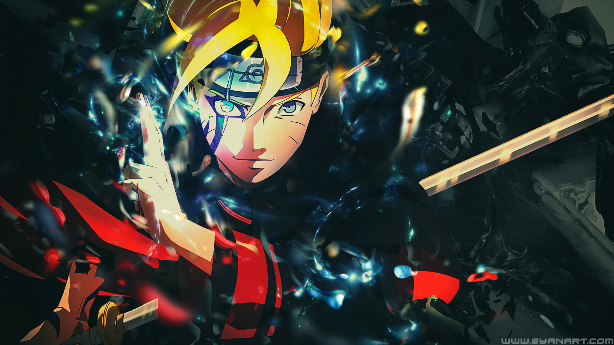
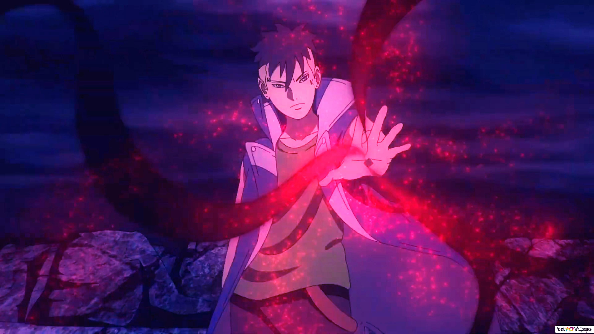
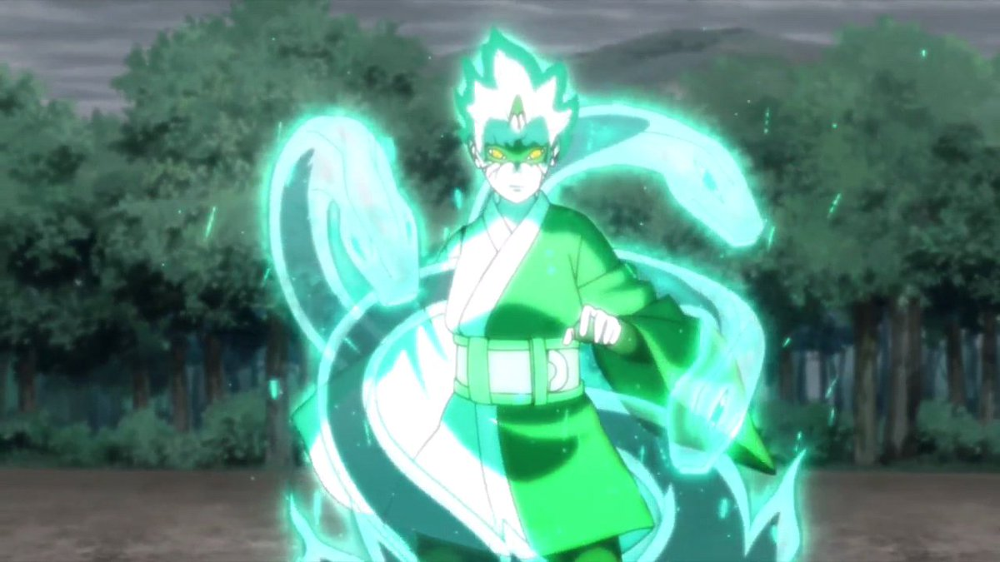

Projetos Basicos

Boruto Uzumaki
Boruto Uzumaki é um personagem fictício criado pelo mangaká japonês Masashi Kishimoto. Aparece pela primeira vez no final da série de mangá Naruto como o filho do protagonista Naruto Uzumaki e Hinata Hyuga.

Kawaki
Kawaki é um personagem fictício do mangá Boruto: Naruto Next Generations de Ukyo Kodachi e Mikio Ikemoto. Kawaki é um jovem que se tornaria o inimigo do personagem principal da série, Boruto Uzumaki.

Mitsuki
Mitsuki é um estudante transferido frequentando aulas em Konohagakure para se tornar um ninja. Ele foi apresentado pela primeira vez no mangá derivado de Naruto, Boruto Next Generation.